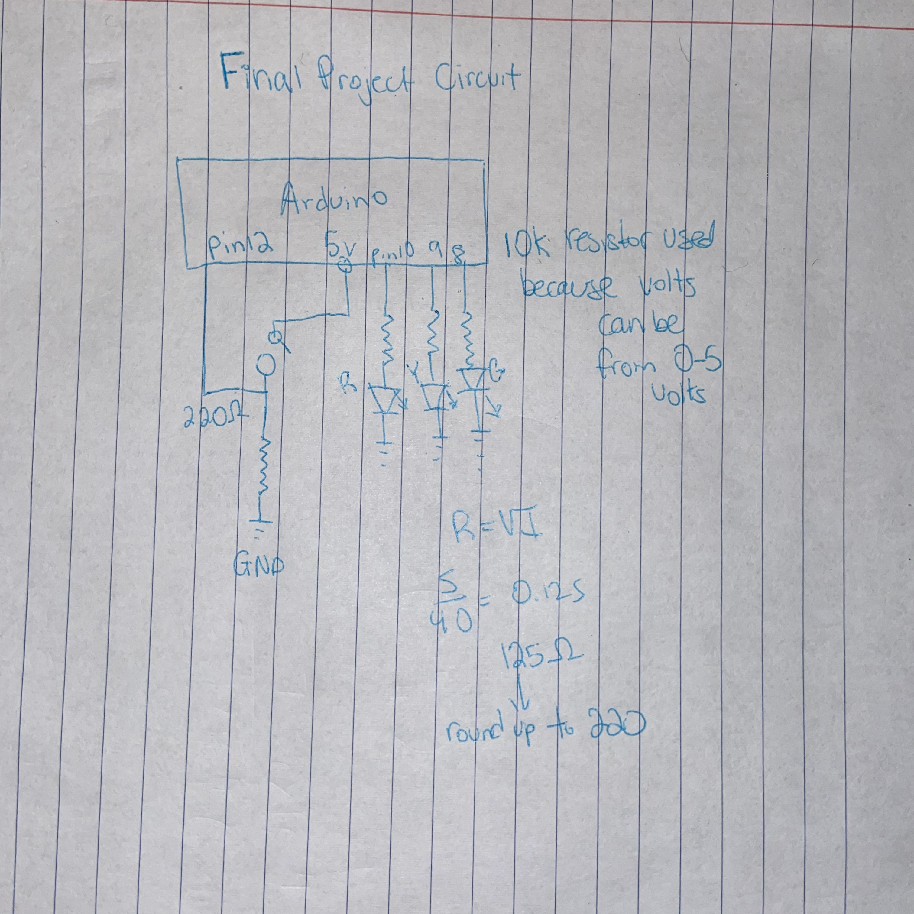

Final, Traffic Light!

^A picture of the circuit.
Here is all the documentation for the final project!
Below is the Video of the circuit running and showing how it works.
https://1drv.ms/v/s!Ahx815tRw0Plt17tHBA5Egt11mqM
Below is an image of the schematic

Below is a snippet of the code used in Arduino.
The code below was gotten from arduino community, slack, Kay Waller, Lia Johansen, Lily Rosencrantz. They helped me fix my
Code and errors and allowed for my circuit to work.
int red = 10; //red led is pin 10
int yellow = 9; // yellow led is pin 9
int green = 8; // green led is pin 8
int button = 12; // switch is on pin 12
void setup(){
pinMode(red, OUTPUT);
pinMode(yellow, OUTPUT);
pinMode(green, OUTPUT);
pinMode(button, INPUT);
digitalWrite(green, HIGH);
}
void loop() {
if (digitalRead(button) == HIGH){
delay(15); // software debounce
if (digitalRead(button) == HIGH) {
// if the switch is HIGH, ie. pushed down - change the lights!
changeLights();
delay(3000); // wait for 3 seconds
}
}
}
void changeLights(){
// green off, yellow on for 2 seconds
digitalWrite(green, LOW);
digitalWrite(yellow, HIGH);
delay(2000);
// turn off yellow, then turn red on for 2 seconds
digitalWrite(yellow, LOW);
digitalWrite(red, HIGH);
delay(2000);
// red and yellow on for 2 seconds (red is already on though)
digitalWrite(yellow, HIGH);
delay(2000);
// turn off red and yellow, then turn o n green
digitalWrite(yellow, LOW);
digitalWrite(red, LOW);
digitalWrite(green, HIGH);
delay(2000);
}